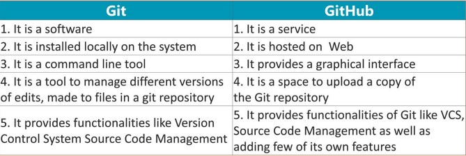

What is Git?
Git is a distributed version control system that tracks changes in any set of computer files, usually used for coordinating work among programmers who are collaboratively developing source code during software development
Difference between Git and Github?
Examples for Git commands?
- git clone - clones the existing repository;
- git add - moves changes from the working directory into the staging area;
- git branch - a general-purpose branch administration tool for creating isolated development environments within a depository;
- git commit - commits the current version of the project into the project history;
- git fetch - downloads a branch and its associated commits and files from another repository without integrating anything into the local repository;
- git init - initializes a new Git repository;
- git log - provides several formatting options for exploring previous revisions of a project;
- git push - publishes an upload local changes to a central repository;